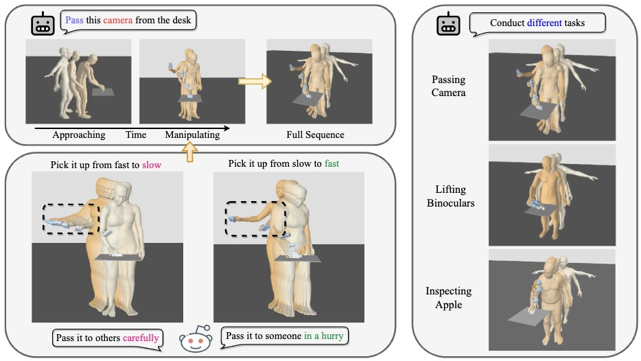
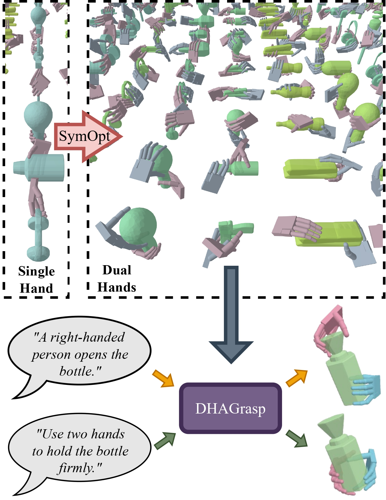

Quanzhou Li
Email: quanzhou001[at]e.ntu.edu.sg
Welcome to my website!
I'm Quanzhou Li and am currently a PhD student at Nanyang Technological University, supervised by Prof. Chen Change Loy
and Prof. Bo Dai. I earned my Bachelor's degree from the University of Toronto with High Distinction in 2020. I also spent two years
at Beihang University, China, before transferring to U of T in 2018.
Research Interests
- Digital human and generative models.
- Reinforcement learning and minipulations.
Research Projects
|

|
Task-Oriented Human-Object Interactions Generation with Implicit Neural Representations Quanzhou Li, Jingbo Wang, Chen Change Loy, Bo Dai WACV 2024In this paper, we propose a method that generates full human-object interaction motions to conduct specific tasks. Our generated motions are continuous and allow upsampling to arbitrary frames. paper |
|

|
DHAGrasp: Synthesizing Affordance-Aware Dual-Hand Grasps with Text Instructions Quanzhou Li, Zhonghua Wu, Jingbo Wang, Chen Change Loy, Bo Dai arxivIn this paper, we propose SymOpt for large-scale dual-hand grasp data generation and DHAGrasp, a text-guided two-stage model that synthesizes diverse dual-hand affordance-aware grasps for unseen objects. paper |

|
Learning by Watching: Physical Imitation of Manipulation Skills from Human Videos Haoyu Xiong, Quanzhou Li, Yun-Chun Chen, Homanga Bharadhwaj, Samrath Sinha, Animesh Garg IROS 2021In this paper we develop a perception module that learns to translate human videos to the robot domain followed by keypoint detection learned in an unsupervised fashion. The key insight of our method lies in explicitly exploiting the kinematics and motion information embedded in the video to learn structured representations. website / video / paper |